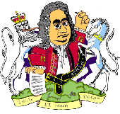

|  | Сочинения Г.Ф.Генделя, исполняющиеся в спектакле: Оратория "МЕССИЯ" (N 1, 2, 4, 8, 12, 19, 34, 39, 48) Марш из оперы "РИНАЛЬДО" Ария Альмирены из оперы "РИНАЛЬДО" Ария Созарма из оперы "СОЗАРМ" Дуэт Корнелии и Сеста из оперы "ЮЛИЙ ЦЕЗАРЬ" Ария Иевфая из оратории "ИЕВФАЙ" |
ГУСТАВУС ВАЛЬЦ - повар Генделя, исполнитель уникальной по сложности (диапазоном в 3 октавы) партии Полифема в опере "Ацис и Галатея", а также партии Саула в оратории "Саул" Преподобный ПАТРИК ДЕЛАНИ, доктор теологии, на премьере "Мессии" в Дублине во время исполнения певицей арии, не в силах сдержать свои чувства, воскликнул: "Женщина за твое пение тебе простятся грехи твои." МЭРИ ПЭНДЕРВЭС (впоследствии Миссис Делани) познакомилась с Генделем в 1710 г., когда Джон Хайдеггер привел его в дом ее отца. Всю жизнь была преданным (платонически) другом Генделя и "знатоком оперы". ФРАНЧЕСКА КУЦЦОНИ - величайшая сопрано 18-го века - известна строптивым характером, неоднократными перепалками с Генделем, который грозился "выкинуть ее в окно". ДЖОН ДЖЕЙМС ХАЙДЕГГЕР - познакомился с Генделем в 1710 г. По отзывам Пэндэрвэс - "самый некрасивый человек, которого я когда-либо видела" и "деспот". С 1715 г. съемщик-продюсер театра "Haymarket", по совместительству - декоратор и иногда либреттист. В трудное для Генделя время сдает театр противникам Генделя из Дворянской Оперы. |
 |
 |
ГЕОРГ II, Король Англии - второй царствующий представитель Ганноверской династии. На троне с 1727 г., искусный интриган, поклонник Генделя.
ФРЕДЕРИК, Принц Уэльский - враждуя с Королем, стремился разорить Генделя. Организовал враждебную к Генделю Дворянскую Оперу, где в качестве композиторов работали Бонончини, Пепуш, Глюк, Сандони, а возглавлял которую мстительный тенор-кастрат Сенесино. Жена Принца - Августа, герцогиня Саксготская, в конце концов помирила Принца с Генделем. Уязвленный Король лишил Генделя пособия 1000 фунтов в год. ФАУСТИНА БОРДОНИ - величайшая меццо-сопрано 18-го века - родом из Венеции. В Лондон была приглашена в 1726 г., так как Куццони была в декретном отпуске. Известен случай, когда Куццони и Фаустина буквально подрались во время представления на глазах у публики. ФРАНЧЕСКО БЕРНАРДИ (сценическое имя Сенесино) - тенор-кастрат, кумир целого поколения лондонцев, обладал чарующим голосом. Однажды на представлении оперы Генделя "Юлий Цезарь" в тот момент, когда Сенесино должен был петь "Цезарь никогда не знал, что такое страх", упала декорация. От неожиданности Сенесино онемел и заплакал. |
Постановка – Д. Шерстенников, Е. Малеева, А. Коган
Фотографии
Вверх